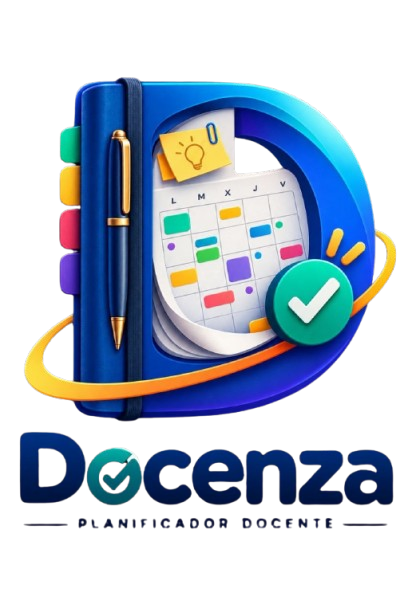

Docenza replica el cuaderno de planificación de toda la vida y le añade lo que el papel nunca pudo darte: edición sin tachones, búsqueda, copias de seguridad, exportación a PDF y acceso desde el móvil, la tablet o el ordenador. Funciona sin conexión.
Ir a DocenzaEs una herramienta de trabajo esencial, pero no ha cambiado en décadas. Y eso se nota cada curso.
Cambia un horario a mitad de trimestre y toca reescribirlo entero. Un error, y a tachar. La planificación real siempre cambia; el papel no perdona.
"¿Qué acordamos en la reunión de octubre?" A pasar páginas. La información está, pero encontrarla lleva más tiempo del que tienes.
Un cuaderno traspapelado o mojado es un curso entero de trabajo que no vuelve. No hay copia de seguridad de un cuaderno de papel.
Te lo dejaste en el aula y estás preparando clase en casa. O al revés. El cuaderno solo está en un sitio a la vez.
Entregar un acta, enviar una programación a jefatura o guardar un justificante implica fotocopiar, escanear y volver a montar.
Marcar festivos nacionales, autonómicos y locales cada septiembre, uno a uno, y aun así planificar sin querer sobre un día no lectivo.
Docenza no te obliga a cambiar tu forma de trabajar: mantiene la estructura del cuaderno físico y la lleva al móvil, la tablet y el ordenador.
Tablas editables para docente y alumnado, con asignaturas de color para distinguirlas de un vistazo, notas por celda y navegación por mes y semana. Un horario puede cubrir una semana o un trimestre entero, y se puede modificar solo una semana sin tocar el resto. Exportación a PDF en horizontal.
Vista mensual al estilo de una agenda digital y planificación semanal periodo a periodo, precargada con el horario real de esa semana. Eventos con hora, color y recordatorio, incluidos eventos que se repiten cada día, semana o mes.
Actas completas con asistentes, orden del día, asuntos tratados, acuerdos y firmas digitales dibujadas en pantalla. Exporta una reunión o todas en un único PDF.
Páginas libres con editor de texto enriquecido: listas, tablas, imágenes desde el dispositivo y dibujo o escritura a mano alzada con grosor de pincel ajustable. Organización por categorías y modo de solo lectura.
Un ayudante con conocimiento de cada módulo: sugerencias de distribución de asignaturas, ideas de actividades por nivel, redacción de órdenes del día y actas, corrección y mejora de textos. Con historial por módulo y opción de exportar cualquier respuesta a un horario, una nota o una reunión.
Los festivos nacionales y el festivo de tu comunidad autónoma se cargan automáticamente al crear el cuaderno. Se distinguen por color en el calendario y bloquean la edición de esos días en horarios y planificación, para no planificar sobre un día no lectivo.
Rápida, privada y disponible siempre, tengas cobertura o no.
Tras la primera visita, funciona sin conexión: crear, editar y navegar sin red
Desde el navegador, en Android, iOS y ordenador. Sin tiendas de aplicaciones
Con cuenta, tu cuaderno se sincroniza entre el móvil, la tablet y el ordenador
Por módulo o el cuaderno completo, con vista previa antes de descargar
Envía un PDF directamente por las apps del teléfono, sin pasos intermedios
Exporta e importa todo tu cuaderno en un archivo. Tú tienes el control
Claro u oscuro, a tu gusto, en toda la aplicación
Entra como prefieras. Recuperación de contraseña por correo
Datos cifrados en tránsito, conforme al RGPD, y borrado de cuenta con un clic
Elige tu comunidad autónoma y se cargan los festivos oficiales del curso
Infantil, Primaria, ESO, Bachillerato o FP: la plantilla de horario se ajusta sola
Avisos de reuniones y tareas mientras tienes la app abierta
Pruébala gratis y sin tarjeta. Si te encaja, la suscripción cuesta menos que el cuaderno que compras cada septiembre.
Docenza nace de la frustración de rellenar el mismo cuaderno curso tras curso: reescribir el horario cuando cambia un grupo, buscar entre páginas el acuerdo de una reunión, empezar de cero cada septiembre. La idea no es reinventar la planificación docente, sino digitalizarla respetando cómo trabaja el profesorado: mismos apartados, misma lógica, pero con la comodidad de lo digital y sin depender de una conexión.
Crea tu cuenta, rellena tu perfil y ten tu cuaderno listo en cinco minutos. Gratis para empezar.
docenza.appPrueba gratuita sin tarjeta • Suscripción 19,99 €/año